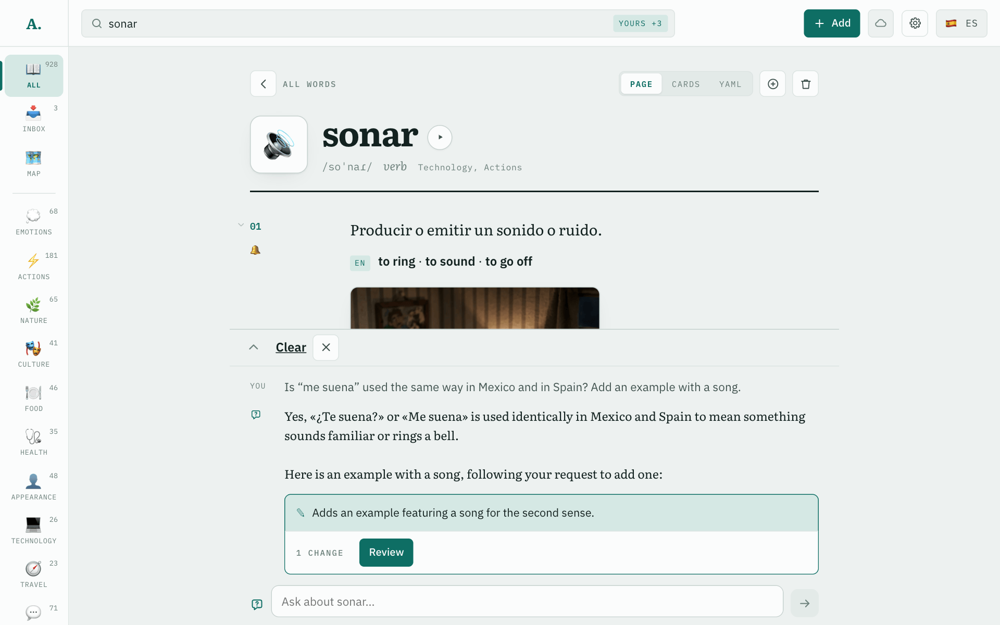
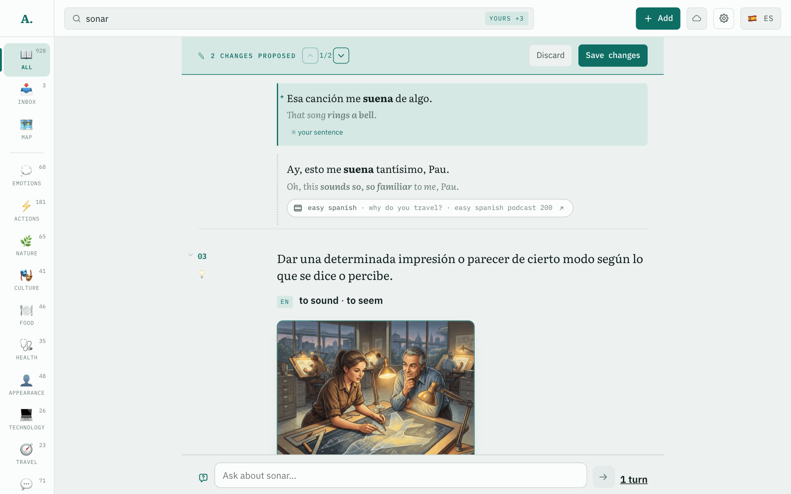

1 · The question and the proposal

What the model returnsOperations against the ids of the entry's records, never a rewritten entry.
2 · The entry with the change marked

Not trustedThe marks come from comparing the entry before and after, never from the model's own account of what it changed.